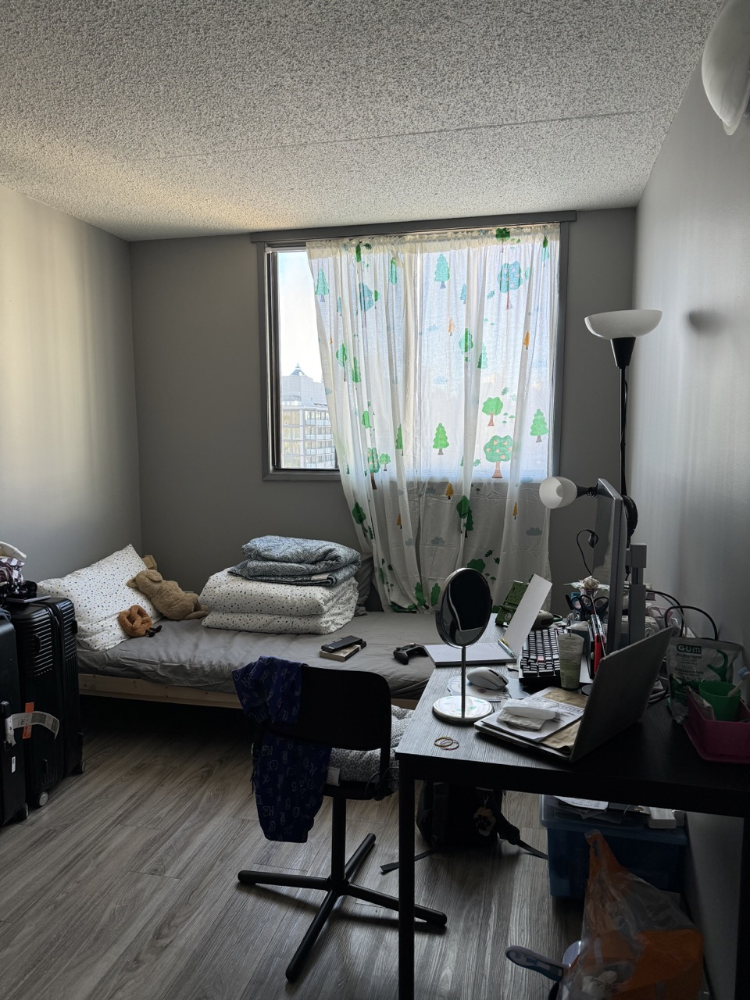

Room Layout Updated

I really liked my previous room layout, but I kept thinking about my mom's words—that the head of the bed shouldn't face or sit directly under the window because of the wind while sleeping. Also, there were strange gaps between the bed and the wall because the heating radiators run diagonally along two sides of the room. So this is how I think my room will end up looking for the rest of the time I stay here.
Dragging my bed around the room reminds me of my mom and me rearranging each week to keep everything feeling fresh back then. The routine might be redundant and unnecessary to others, but it was one of the main things that helped me sense time in terms of weeks. Though I doubt I'll have time doing so now, I still feel it is better to take care of myself physically and mentally by tidying the space up once in a while.